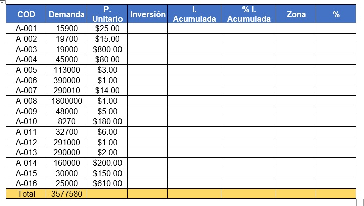
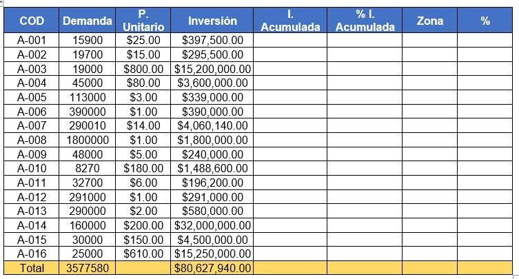
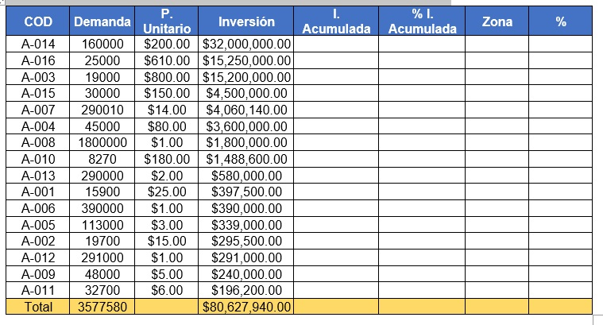
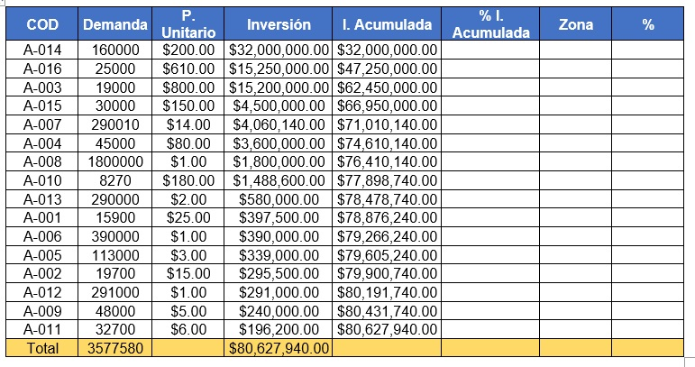
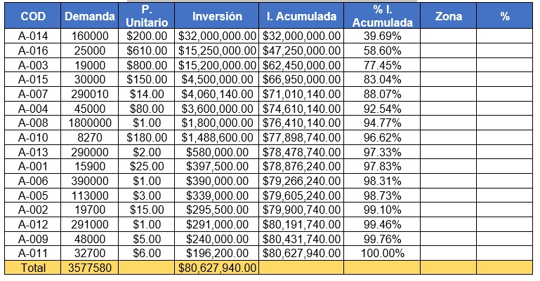
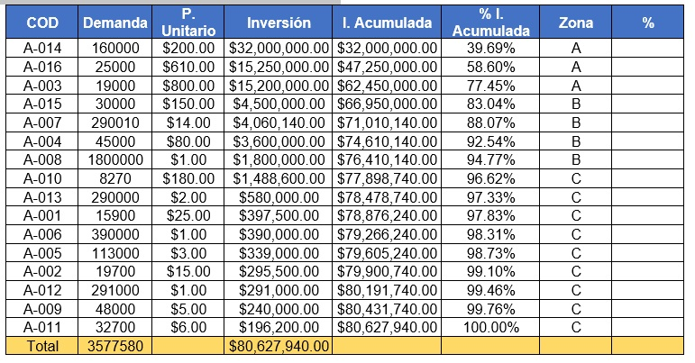
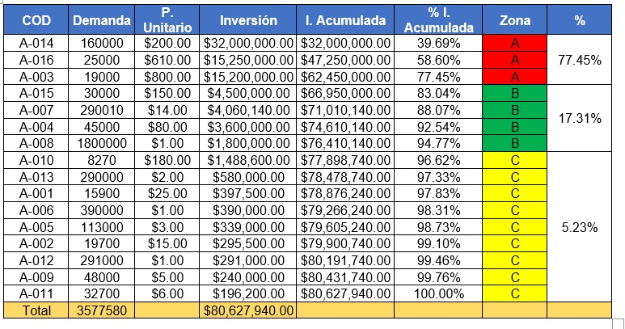
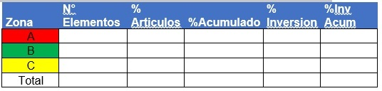
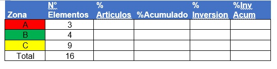
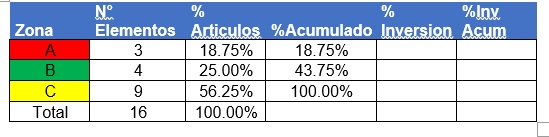

El análisis ABC es una metodología de segmentación de productos de acuerdo con criterios preestablecidos (indicadores de importancia, tales como el "costo unitario" y el "volumen anual demandado"). El criterio en el cual se basan la mayoría de los expertos en la materia es el valor de los inventarios y los porcentajes de clasificación son relativamente arbitrarios.
Muchos textos suelen considerar que la zona A de la clasificación corresponde estrictamente al 80% de la valorización del inventario, y que el 20% restante debe dividirse entre las zonas B y, tomando porcentajes muy cercanos al 15% y el 5% del valor del stock para cada zona respectivamente.
Control A
Las unidades pertenecientes a la zona A requieren toda la atención y control necesaria. Esta zona corresponde a aquellas unidades que presentan una parte importante del valor total del inventario. El máximo control puede reservarse a las materias primas que se utilicen en forma continua y en volúmenes elevados. Para esta clase de materia prima los agentes de compras pueden celebrar contratos con los proveedores que aseguren un suministro constante y en cantidades que equiparen la proporción de utilización. La zona A en cuanto a gestión del almacén debe de contar con ventajas de ubicación y espacio en comparación con las otras unidades de inventario, estas ventajas son determinadas por el tipo de almacenamiento que utilice la organización.
Control B
La zona B le sigue en importancia a la zona A pero a diferencia de la sección anterior no deben ser monitoreadas de forma tan constante. Los productos que se encuentran en esta zona no son tan demandados como los de la zona A. Los costos de faltantes de existencias para este tipo de unidades deberán ser moderados a bajos y las existencias de seguridad deberán brindar un control adecuado con el inventario, aun cuando la frecuencia de órdenes es menor.
Control C
Es la zona con la mayoría de las unidades en inventario. Es necesario monitorearlos de forma rutinaria y su punto de reorden no es tan estricto como el de las zonas previas.
La clasificación ABC se realiza con base en el producto, expresando su valor por unidad de tiempo (regularmente anual) de las ventas de cada artículo i, donde:
D = Demanda anual del producto(unidades/año)
C = costo unitario del producto (unidades monetarias/unidad)
Valorización o inversión = D * C (unidades monetarias/año)
Antes de iniciar es fundamental establecer los porcentajes que harán que determinadas unidades se clasifiquen en sus respectivas zonas (A, B o C).
Luego de aplicarse las operaciones para determinar la valorización de los artículos, se calcula el porcentaje de participación de los artículos, según la valorización. Este ejercicio se efectúa dividiendo la valorización de cada producto entre la suma total de la valorización de todos los productos.
Posteriormente se deben organizar los artículos de mayor a menor según sus porcentajes, ahora estos porcentajes se acumulan. Por último, se agrupan teniendo en cuenta el criterio porcentual determinado en la primera parte del método. De esta manera quedan establecidas las unidades que pertenecen a cada zona.
Ejemplos
Ejemplo 1
Se tiene la siguiente tabla

Elaboración propia
Primero debemos definir los criterios porcentuales. Usaremos los valores propuestos de la teoría del abc del 80-20. Por lo que las zonas quedaran de la siguiente manera.
Clase A=80%
Clase B=15%
Clase C=5%
Una vez definidas las zonas procedemos a sacar la inversión o valorización de los productos con la formula previamente dada y la suma total de la inversión quedando de la siguiente forma la tabla.

Elaboración propia
A continuación, se deben ordenar de mayor a menor los productos según su inversión.

Elaboración propia
El siguiente paso es encontrar la inversión acumulada. Esta se obtiene de la suma de la inversión mas el acumulado previo. La excepción seria la primera pues no hay acumulado previo. Para dejar más claro esto la tabla debe quedar de la siguiente forma:

Elaboración propia
Como podemos observar la inversión acumulada del primer elemento es igual a su inversión, sin embargo, el segundo es la suma de la inversión más el acumulado anterior o en este caso la inversión del primero. Al ir sumando las inversiones al final debemos tener la misma cantidad que el total de la suma de inversiones que como podemos observar en la tabla se cumple.
El siguiente paso es sacar el porcentaje. La forma de obtenerlo es:
% inversión acumulado=(inversion acumulada)/(Suma total de las inversiones)

Elaboración propia
Al final el último producto siempre coincidirá con el 100%.
Una vez obtenido debemos clasificarlos por zona. Para clasificar por zona solo nos basta observar el porcentaje que asignamos al inicio y el porcentaje de la inversión acumulada del producto. Como definimos que la zona A es el 80% todos los artículos que estén por debajo de dicho porcentaje caerán en la zona A. Los de la zona B siempre que el porcentaje sea menor al 95% y los de la zona c serán los que queden.

Elaboración propia
Algo que notaremos en primer lugar es que la zona A solo llega hasta el 77.45%. Teóricamente las zonas tendrán productos que llegue a los porcentajes exactos, pero en la practica las cosas cambian pues nunca vamos a obtener los valores exactos. Por eso al momento de clasificar los porcentajes no deben pasar a los establecidos a la zona. Tomando los porcentajes de la tabla la zona A se quedo hasta el 77.45% ya que si asignábamos el siguiente elemento con porcentaje de 83.04% nos pasaríamos del 80% establecido y todo el ejercicio saldría mal.
Solo falta rellenar el recuadro de % el cual tomara el porcentaje mayor de cada área de la siguiente forma:

Elaboración propia
Una vez llenada nuestra tabla debemos proceder a finalizar el análisis abc. Para esto se requiere otra tabla la cual trabajara exclusivamente con las zonas.

Elaboración propia
Lo primero que hay que hacer es contar el número de elementos que hay por cada zona.

Elaboración propia
Proseguimos a calcular el porcentaje de los artículos de cada zona el cual es el número de artículos entre el total de artículos. Y al igual que con la inversión acumulada podemos obtener el %acumulado de la misma forma.

Elaboración propia
El porcentaje de inversión lo obtenemos de la ultima columna de la primera tabla y el % de inversión acumulada se realiza de la misma forma que los demás acumulados.